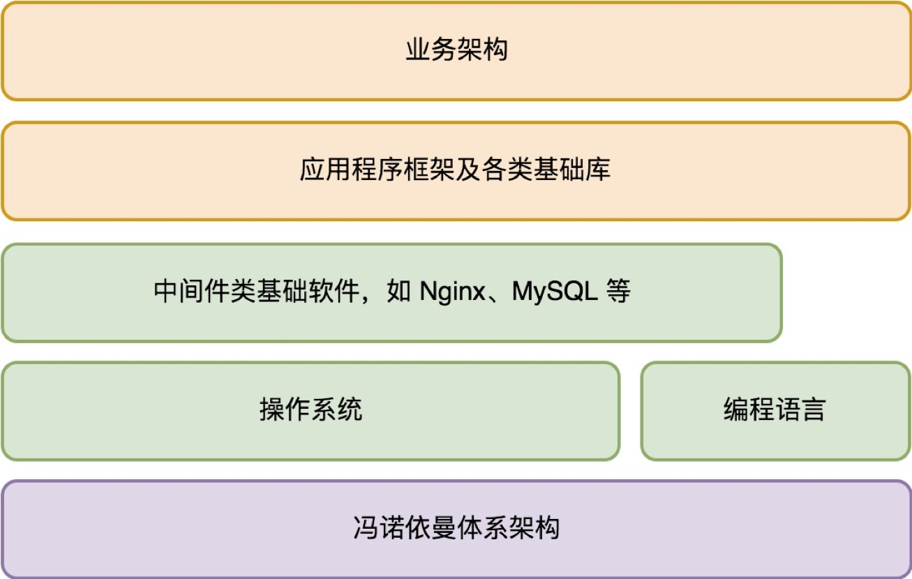
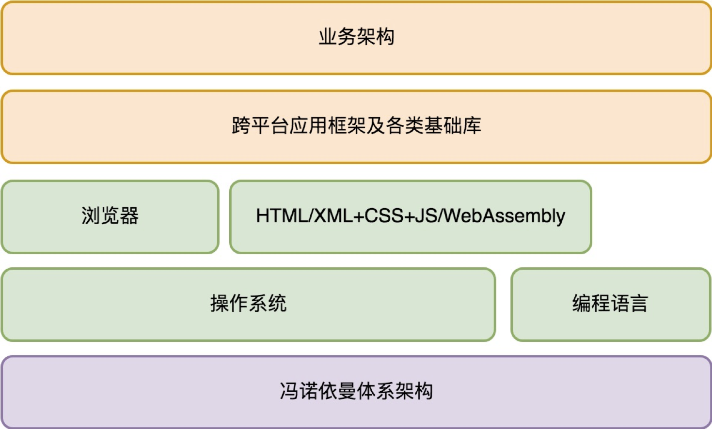

- 00 开篇词 怎样成长为优秀的软件架构师？.md.html
- 01 架构设计的宏观视角.md.html
- 02 大厦基石：无生有，有生万物.md.html
- 03 汇编：编程语言的诞生.md.html
- 04 编程语言的进化.md.html
- 05 思考题解读：如何实现可自我迭代的计算机？.md.html
- 06 操作系统进场.md.html
- 07 软件运行机制及内存管理.md.html
- 08 操作系统内核与编程接口.md.html
- 09 外存管理与文件系统.md.html
- 10 输入和输出设备：交互的演进.md.html
- 11 多任务：进程、线程与协程.md.html
- 12 进程内协同：同步、互斥与通讯.md.html
- 13 进程间的同步互斥、资源共享与通讯.md.html
- 14 IP 网络：连接世界的桥梁.md.html
- 15 可编程的互联网世界.md.html
- 16 安全管理：数字世界的守护.md.html
- 17 架构：需求分析 (上).md.html
- 18 架构：需求分析 (下) · 实战案例.md.html
- 19 基础平台篇：回顾与总结.md.html
- 20 桌面开发的宏观视角.md.html
- 21 图形界面程序的框架.md.html
- 22 桌面程序的架构建议.md.html
- 23 Web开发：浏览器、小程序与PWA.md.html
- 24 跨平台与 Web 开发的建议.md.html
- 25 桌面开发的未来.md.html
- 26 实战（一）：怎么设计一个“画图”程序？.md.html
- 27 实战（二）：怎么设计一个“画图”程序？.md.html
- 28 实战（三）：怎么设计一个“画图”程序？.md.html
- 29 实战（四）：怎么设计一个“画图”程序？.md.html
- 30 实战（五）：怎么设计一个“画图”程序？.md.html
- 31 辅助界面元素的架构设计.md.html
- 32 架构：系统的概要设计.md.html
- 33 桌面开发篇：回顾与总结.md.html
- 34 服务端开发的宏观视角.md.html
- 35 流量调度与负载均衡.md.html
- 36 业务状态与存储中间件.md.html
- 37 键值存储与数据库.md.html
- 38 文件系统与对象存储.md.html
- 39 存储与缓存.md.html
- 40 服务端的业务架构建议.md.html
- 41 实战（一）：“画图”程序后端实战.md.html
- 42 实战（二）：“画图”程序后端实战.md.html
- 43 实战（三）：“画图”程序后端实战.md.html
- 44 实战（四）：“画图”程序后端实战.md.html
- 45 架构：怎么做详细设计？.md.html
- 46 服务端开发篇：回顾与总结.md.html
- 47 服务治理的宏观视角.md.html
- 48 事务与工程：什么是工程师思维？.md.html
- 49 发布、升级与版本管理.md.html
- 50 日志、监控与报警.md.html
- 51 故障域与故障预案.md.html
- 52 故障排查与根因分析.md.html
- 53 过载保护与容量规划.md.html
- 54 业务的可支持性与持续运营.md.html
- 55 云计算、容器革命与服务端的未来.md.html
- 56 服务治理篇：回顾与总结.md.html
- 57 心性：架构师的修炼之道.md.html
- 58 如何判断架构设计的优劣？.md.html
- 59 少谈点框架，多谈点业务.md.html
- 60 架构分解：边界，不断重新审视边界.md.html
- 61 全局性功能的架构设计.md.html
- 62 重新认识开闭原则 (OCP).md.html
- 63 接口设计的准则.md.html
- 64 不断完善的架构范式.md.html
- 65 架构范式：文本处理.md.html
- 66 架构老化与重构.md.html
- 67 架构思维篇：回顾与总结.md.html
- 68 软件工程的宏观视角.md.html
- 69 团队的共识管理.md.html
- 70 怎么写设计文档？.md.html
- 71 如何阅读别人的代码？.md.html
- 72 发布单元与版本管理.md.html
- 73 软件质量管理：单元测试、持续构建与发布.md.html
- 74 开源、云服务与外包管理.md.html
- 75 软件版本迭代的规划.md.html
- 76 软件工程的未来.md.html
- 77 软件工程篇：回顾与总结.md.html
- 加餐 如何做HTTP服务的测试？.md.html
- 加餐 实战：“画图程序” 的整体架构.md.html
- 加餐 怎么保障发布的效率与质量？.md.html
- 热点观察 我看Facebook发币（上）：区块链、比特币与Libra币.md.html
- 热点观察 我看Facebook发币（下）：深入浅出理解 Libra 币.md.html
- 用户故事 站在更高的视角看架构.md.html
- 答疑解惑 想当架构师，我需要成为“全才”吗？.md.html
- 结束语 放下技术人的身段，用极限思维提升架构能力.md.html
- 课外阅读 从《孙子兵法》看底层的自然法则.md.html
- 捐赠
01 架构设计的宏观视角
你好，我是七牛云许式伟。今天我们来谈谈架构设计的宏观视角。
在信息科技高度发展的今天，我们每个人随时随地都可以接触到由程序驱动的智能电子设备，包括手机（如iPhone、oppo拍照手机）、平板电脑（如iPad）、手表（如iWatch、小天才智能手表）、音箱（如天猫精灵）、汽车（如特斯拉）等等。
这些东西背后是怎么工作的？单就其中的软件系统而言，这些小小的设备上往往运行着成千上万个软件模块，这些模块是如何如此精密地一起协作的？
对此，我过去接触过很多的软件开发工程师，或者架构师，很多人对这些原理也是一知半解，虽然“知其然”，但却“不知其所以然”。甚至有些朋友可能觉得，学这些有什么用处呢，在我看来，这部分内容恰恰是我们成为架构师很重要的一门基础课。
为什么需要建立宏观视角？
如同造房子有建筑工人（负责搬砖）和建筑师（负责架构设计）一样，软件系统的开发过程同样需要有程序员（负责搬“砖”）和架构师（负责架构设计）。作为架构师，我们需要的第一个能力是宏观的全局掌控能力。
如果把应用程序比作一座大厦，那么我们作为大厦的架构师，需要把大厦的结构搭建好，让程序员可以把砖填充进去，我们都知道，一个大厦的结构建得是否稳固，与地基密不可分。
所以，我们首先就需要从大厦的地基开始，熟悉这座大厦。毕竟，你对所依赖的基础架构了解得越全面，做业务架构设计就会越发从容。
介绍基础架构的知识点并不是让你真的去实现它们。但你仍然需要懂得它们的核心思想是什么，知道有哪些信息是你必须深刻理解的，以便可以更好地驾驭它们。
我们的整个专栏内容也会从基础架构开始讲起，最后逐步过渡到业务架构，到最终完成一个完整应用程序的设计过程。
那么，在今天的开篇第一篇，我们需要站在宏观视角，从基础架构开始，逐渐来解剖一个应用程序的整体构成，我希望，通过今天的文章，可以让你对于一个程序的全貌，形成完整的认识。
我们从头开始。
应用程序的基础架构
我们想学习一个程序的基础架构，其实就是弄清楚电脑的工作原理，以及程序的运行原理。
无论是什么样的智能电子设备，手机也好，汽车也罢，它们都可以称为“电脑”。所有的电脑都可以统一看作由“中央处理器+存储+一系列的输入输出设备”构成。
中央处理器，也就是我们平常说的CPU，负责按指令执行命令；存储负责保存数据，包括我们要执行的命令，也是以数据形式保存在存储中的。
每次在打开电脑的电源后，中央处理器都会从存储的某个固定位置处开始读入数据（也就是指令），并且按指令执行命令，执行完一条指令就会继续执行下一条指令。电脑就这样开始工作了。
你可能会说，就这么简单？是的，就是这么简单。
那这么简单的话，为何电脑能够完成这么多复杂而多样化的工作？
这整个过程，在我看来主要依赖两点。
第一是可编程性。 大体来说，中央处理器（CPU）的指令分为如下这几类。
- 计算类，也就是支持我们大家都熟知的各类数学运算，如加减乘除、sin/cos等等。
- I/O类，（从存储读写数据）从输入输出设备读数据、写数据。
- 指令跳转类，在满足特定条件下跳转到新的当前程序执行位置。
虽然， CPU 指令是一个很有限的指令集，但是CPU 执行的指令序列（或者叫“程序”）并不是固定的，而是依赖保存在存储中的数据—— 由软件工程师（或者叫“程序员”）编写的软件来决定。指令序列的可能性是无穷的，这也就意味着电脑能够做的事情的可能性也是无穷的。
第二是开放设计的外部设备支持。 虽然我们电脑可以连接非常非常多种类的外部设备，比如键盘、打印机、屏幕、汽车马达等等，但CPU 并不理解这些设备具体有什么样的能力，它只和这些设备交换数据。它能够做的是从某个编号的设备（通常这个设备编号被称为“端口”）读入一段数据，或者向设备的端口写入一段数据。
例如，当你在键盘上按下了A的时候，CPU 可以从键盘连接的端口读到一段数据，通过这段数据来表达你按了“A”，可能CPU 会向打印机连接的端口发送一段数据，来驱动打印机打印特定的文本；还有可能CPU 会向汽车马达所在的端口发送数据，来驱动马达转动，从而让汽车按照预期来行驶。
值得注意的是，CPU 知道的是如何和这些设备交换数据，但是并不理解数据代表什么含义。这些外部设备的厂商在提供设备硬件的同时，往往也需要提供和硬件匹配的软件，来完成和CPU 的协作，让软件工程师可以轻松使用这些设备。
从上面可以看出，电脑的 CPU 是一个非常简洁的模型，它只读入和写出数据，对数据进行计算。 这也是为什么我们往往把电脑也叫作“计算机”，这是因为 CPU 这个计算机的大脑的确只会做“计算”。
这个基础的设计体系，我们很多人都知道，这就是冯·诺依曼计算机体系。1945年6月，冯·诺依曼以“关于EDVAC的报告草案”为题起草的长达101页的总结报告，定义了“冯·诺依曼体系结构”，他现在也被称为计算机之父。我想看到这里，你应该不难理解他的伟大之处了吧？
有了这个基础的计算机体系之后，我们就可以编写软件了。
当然我们遇到的第一个问题是直接用机器指令编写软件太累，而且这些机器指令像天书一样没人看得懂，没法维护。
所以，编程语言+编译器就出现了。编译器负责把我们人类容易理解的语言，转换为机器可以理解的机器指令，这样一来就大大解放了编写软件的门槛。
在编写软件不是问题时，我们遇到的第二个问题，就是多个软件在同一个电脑上怎么共处。多个软件大家往同一个存储地址写数据冲突怎么办？一起往打印机去发送打印指令怎么办？有的软件可能偷偷搞破坏怎么办？
于是，操作系统就出现了。
它首先要解决的是软件治理的问题。 它要建立安全保护机制，确保你的电脑免受恶意软件侵害。同时，它也要建立软件之间的协作秩序，让大家按照期望的方式进行协作。比如存储你写到这里，那么我就要写到别处；使用打印机要排队，你打完了，我才能接着去打印。
操作系统其次解决的是基础编程接口问题。 这些编程接口一方面简化了软件开发，另一方面提供了多软件共存（多任务）的环境，实现了软件治理。
例如，对于屏幕设备，操作系统需要提供多任务窗口系统，以避免屏幕被多个软件画得乱七八糟；对于键盘输入设备，操作系统引入焦点窗口，以确定键盘输入的事件被正确发送到正确的软件程序。
你会发现，今天的我们开发软件的时候，已经处于一些基础的架构设计之中。像冯·诺依曼计算机体系，像操作系统和编程语言，这些都是我们开发一个应用程序所依赖的基础架构。
基础架构解决的是与业务无关的一些通用性的问题，这些问题往往无论你具体要做什么样的应用都需要面对。而且，基础架构通常以独立的软件存在，所以也称为基础软件。
例如，我们熟知的Linux、Nginx、MySQL、PHP 等这些软件都属于基础软件，这些基础软件极大地降低了应用开发的难度。在今天软件服务化的大趋势下，很多基础软件最终以互联网服务的方式提供，这就是所谓的“云计算”。
完整的程序架构是怎样的？
讲完了程序的地基，让我们来总览一下程序的完整架构。
在越强大的基础架构支撑下，应用程序开发需要关注的问题就越收敛，我们的开发效率就越高。** 在我们只需要关注应用程序本身的业务问题如何构建时，我们说自己是在设计应用程序的业务架构（或者叫“应用架构”）。**
业务架构虽然会因为应用的领域不同而有很大的差异，但不同业务架构之间，仍然会有许多共通的东西。它们不只遵循相同的架构原则，还可以遵循相同的设计范式。
一些设计范式被人们以应用程序框架的方式固化下来。例如，在用户交互领域有著名的MVC 框架（如JavaScript 语言的Angular，PHP 语言的Zend，Python 语言的 Django），在游戏开发领域有各种游戏引擎（如JavaScript 语言的 Phaser，C# 语言的 Unity3D），等等。
对于一个服务端应用程序来说，其完整的架构体系大体如下：

对于客户端应用程序来说，和服务端的情况会有非常大的差别。客户端首先面临的是多样性的挑战。
单就操作系统来说，PC 就有Windows、Mac、Linux 等数十种，手机也有Android、iOS，Windows Mobile 等等。而设备种类而言就更多了，不只有笔记本、平板电脑，还有手机、手表、汽车，未来只会更加多样化。
第一个想消除客户端的多样性，并且跨平台提供统一编程接口的，是浏览器。
可能在很多人看来，浏览器主要改变的是软件分发的方式，让软件可以即取即用，无需安装。但从技术角度来说，底层操作系统对软件的支持同样可以做到即取即用。
这方面苹果在iOS 上已经在尝试，大家可能已经留意到，如果你一个软件很久没有用，iPhone 就会把这个软件从本地清理出去，而在你下一次使用它时又自动安装回来。
假如软件包足够小，那么这种行为和 Web 应用就毫无区别。不同之处只在于Web 应用基于的指令不是机器码，而是更高阶的 JavaScript 脚本。
JavaScript 因为指令更高阶，所以程序的尺寸比机器码会有优势。但另一方面来说 JavaScript 是文本指令，表达效率又要比机器码低。
但这一点也在发生变化，近年来 WebAssembly 技术开始蓬勃发展，JavaScript 作为浏览器的机器码的地位会被逐步改变，我们前端开发会面临更多的可能性。
浏览器的地位非常特殊，我们可以看作操作系统之上的操作系统。一旦某种浏览器流行起来，开发人员都在浏览器上做应用，那么必然会导致底层操作系统管道化，这是操作系统厂商所不愿意看到的。
而如果浏览器用户量比较少，那么通过它能够触达的用户量就太少，消除不同底层操作系统差异的价值就不存在，开发人员也就不乐意在上面开发应用。
我们知道，PC 的浏览器之战打到今天，基本上就剩下Chrome、Internet Explorer、Safari、Firefox 等。
有趣的是，移动浏览器的战场似乎是从中国开始打起的，这就是微信引发的小程序之战，它本质上是一场浏览器的战争。
浏览器是一个基础软件，它能够解决多大的问题，依赖于它的市场占有率。但是基于同样的浏览器技术核心也可以构建出跨平台的应用框架。我们看到 React Native 就是沿着这个思路走的。当然这不是唯一的一条路，还有人会基于类似 QT 这样的传统跨平台方案。
整体来说，对于一个客户端应用程序来说，其完整的架构体系大体如下：

对于架构师来说，不仅仅只是想清楚业务应该怎么去做好分解，整个应用从底到最顶层的上层建筑，每一层都需要进行各种决策。先做 iOS 版本，还是先做小程序？是选择 Java 还是 Go 语言？这些都是架构的一部分。
结语
今天，我们从“计算机是如何工作”开始，一起登高鸟瞰，总览了程序完整的架构体系。
可能有人看到今天的内容心里会有些担心：“原来架构师要学这么多东西，看来我离成为架构师好远。”
好消息是：我们就是来打消这个担心的。如果我们把写代码的能力比作武功招式，那么架构能力就好比内功。内功修炼好了，武功招式的运用才能得心应手。
而架构能力的提升，本质上是对你的知识脉络（全身经络）的反复梳理与融会贯通的过程。 具备架构思维并不难，而且极有必要。不管今天的你是不是团队里的一位架构师，对任何一位程序员来说，具备架构思维将会成为让你脱颖而出的关键。
这就像你没有从事云计算行业，但是你仍然需要理解云计算的本质，需要驾驭云计算。你也不必去做出一个浏览器，但是你需要理解它们的思考方式，因为你在深度依赖于它们。
接下来我们将进一步展开来谈这个程序架构体系里面的每一个环节。你对今天的内容有什么思考与解读，欢迎给我留言，我们一起讨论。如果你觉得有所收获，也欢迎把文章分享给你的朋友。感谢你的收听，我们下期再见。
© 2019 - 2023 Liangliang Lee. Powered by gin and hexo-theme-book.